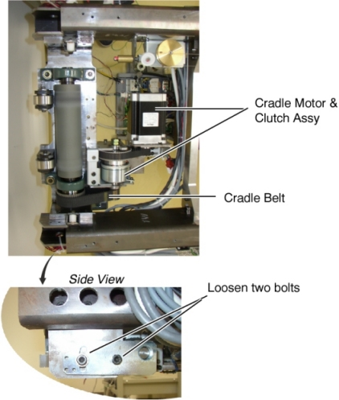
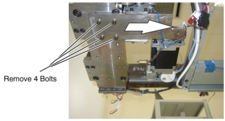
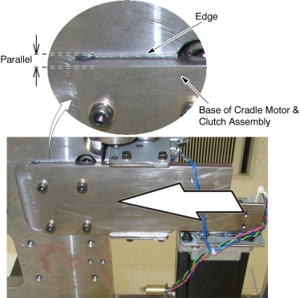

Operating Documentation
Direction 5193574-800, Rev# 22
LightSpeed 7.X Service Methods
Module Version 2.0, Version Date 2/23/12
Operating Documentation |
| Required Persons | Preliminary Reqs | Procedure | Finalization |
|---|---|---|---|
| 1 |
| Last Revised: | 23 Sep 2011 |
| Item | Qty | Effectivity | Part# | Manufacturer | |
|---|---|---|---|---|---|
| Tension Gauge | 1 | - | - | - | |
| Item | Qty | Effectivity | Part# | Manufacturer | |
|---|---|---|---|---|---|
| Cradle Motor and Clutch Assembly (For Global PET/CT Table) | 1 | - | 5127493 | - | |
| Cradle Motor and Clutch Assembly (For VT2000 and VT2000X) | 1 | - | 5127493 | - | |
| Cradle Motor and Clutch Assembly (For VT1700) | 1 | - | 5135265 | - | |
Raise the Table to maximum height.
Move the IMS to OUT limit position.
Remove power from Table by turning off 120VAC, Axial Drive and HVDC switches on Service Switch Panel.
Remove the following Table component and covers:
Cradle
Top Cover (Right/Left)
Tray-F
Front Top Cover
Front Left Rail Cover
Illustration 1: Table Covers

Cut any tie-wraps holding the motor and the clutch cables to the Table frame.
Disconnect a motor cable connector and a clutch cable connector.
Loosen 2 bolts to remove tension from the cradle belt, and remove the belt from the small pulley of the clutch.
Illustration 2: Cradle Motor & Clutch Assembly

Unscrew 4 bolts under the Cradle Motor & Clutch Assy.
Slide the Cradle Motor & Clutch Assy away from the Gantry, and remove it from the Table.
Illustration 3: Cradle Motor & Clutch Assembly Removal

Install the new Cradle Motor & Clutch Assy in place, and tighten the 4 bolts.
| NOTE: | Verify that the base of cradle motor & clutch assembly is parallel with edge. |
Illustration 4: Cradle Motor & Clutch Assembly Installation

Check to make sure that the cables does not catch the cradle belt.
Adjust the cradle belt tension according to Cradle Motor and Cradle Drive Belt Tension Adjustment.
Connect the 2 cable connectors, and fasten the cables to the Table frame with tie-wraps.
Re-install the cradle and Table covers.
Power up the Table from the Service Switch Panel.
Move the cradle In/Out completely 10 cycles, and verify that the cradle movement is operating normally.